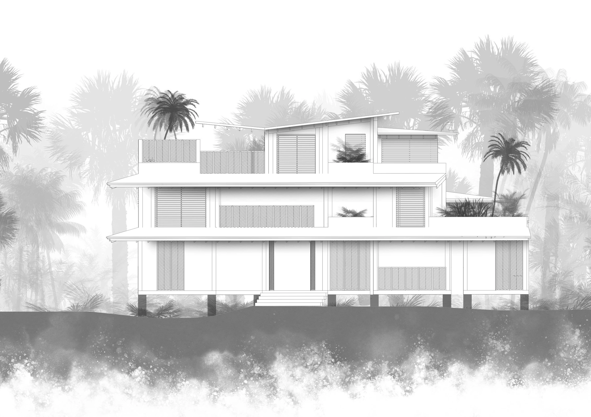
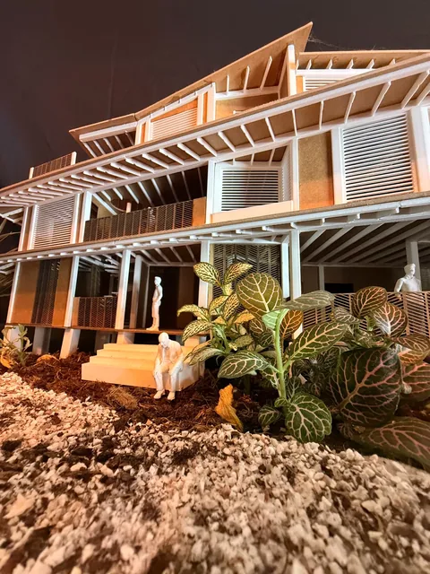

Design d’espace · Nice
Antoine Fabre
J’explore les liens entre le paysage et les lieux que l’on habite, du premier dessin à la maquette.
Parcourir les projetsProjets sélectionnés
Siargao · Philippines
Habiter l’archipel
À Santa Fe, les passages entre les volumes de l’hostel deviennent des lieux de vie.


Lac de Braies · Italie
Nuit flottante
Une suite au-dessus de l’eau, dont les toitures reprennent la ligne des montagnes.
Découvrir le projet
Démarche
Du site au détail.
Mon point de départ est le lieu. À Siargao, l’ombre et la circulation de l’air guident l’implantation de l’hostel. Au lac de Braies, la ligne des montagnes se retrouve dans le profil des toitures.
Diplômé du Bachelor en design d’espace de l’École de Condé à Nice, je consacre mon année de césure 2026–2027 à préparer ma candidature en école d’architecture.